wasm32 · runs in your browser
WebAssembly Shelf
Small games and tools compiled to WebAssembly. Nothing to install: each one is a single page that loads its own binary.
-

Ember Well
A pixel-art descent RPG. Steer a lantern spirit down a dark well and collect embers before your light runs out. Includes three biomes, upgrades, four spirits and a daily well.
- C → wasm32
- 52 KB binary
- 144×256 px
- touch + keys
-

Pixel Run
A pixel-art park 5K. Tap to run, jump the logs, roots, cones, dogs and puddles, and race the pacers, your own best-run ghost, or a friend on the same phone.
- Rust → wasm32
- 584 KB binary
- 180 px grid
- touch + keys
- EN · 한국어
-
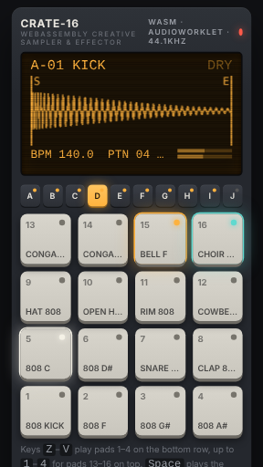
CRATE-16
A groove sampler and effector. Play 16 pads across 10 banks, route them through two FX buses, sequence 15 genre patterns, then resample and chop your own sounds.
- AssemblyScript → wasm32
- 37 KB binary
- AudioWorklet
- touch + keys + MIDI
-
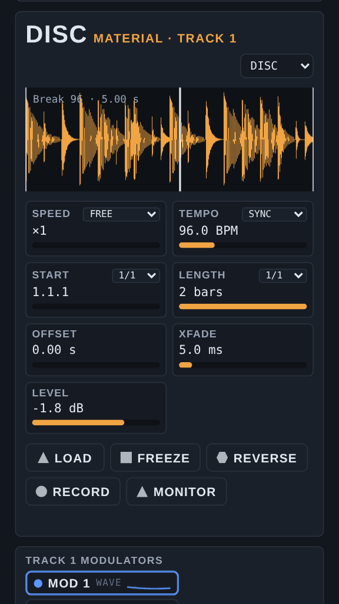
Lathe-4
A four-track sculpting sampler. Each track runs a sample player, granular engine, 48-band resonator, distortion and delay-reverb, with modulators, performance macros and 64 guided demo scenes.
- C → wasm32
- 73 KB binary
- AudioWorklet
- keys + MIDI
-
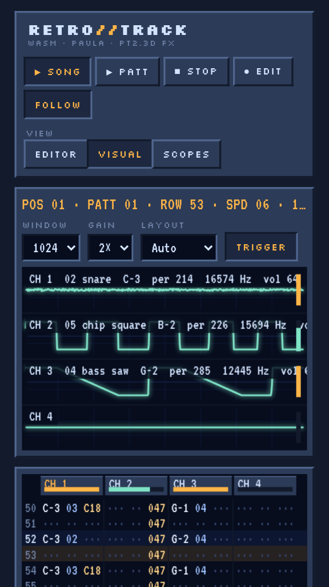
RETRO//TRACK
A ProTracker-style music tracker. Write 4 to 8 channel patterns with every PT2.3D effect, edit and synthesise samples, load songs straight from The Mod Archive, Modland and AMP, export WAV, and watch large oscilloscopes as the song plays.
- C → wasm32
- 17 KB binary
- AudioWorklet
- Paula emulation
- keys + touch
-
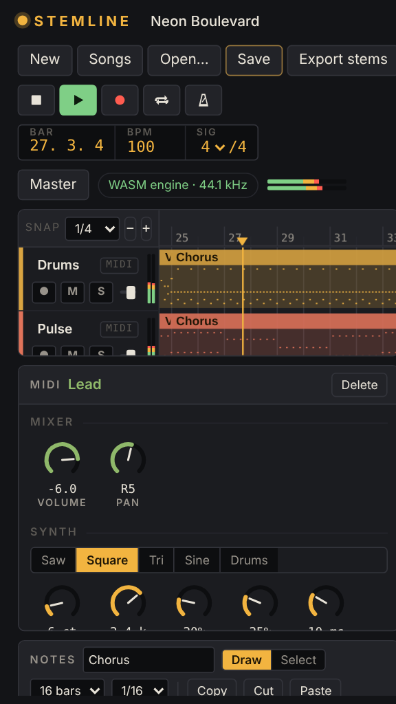
Stemline
A multitrack DAW. Record audio and MIDI on several tracks, edit waveforms and notes, mix with built-in effects or WAM plugins, open 42 sample songs in 14 genres, and save projects and stems.
- C → wasm32
- 40 KB binary
- AudioWorklet
- WAM 2.0 plugins
- keys + MIDI
-
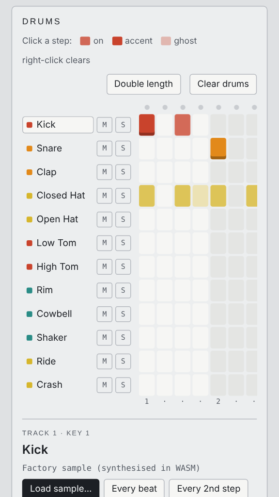
Stepcraft 12
A drum machine with a 12-track sampler, step sequencer, bass and keys synths, and delay and reverb. Load your own samples or start from 54 example grooves in 11 genre families.
- C → wasm32
- 31 KB binary
- AudioWorklet
- keys + touch
-
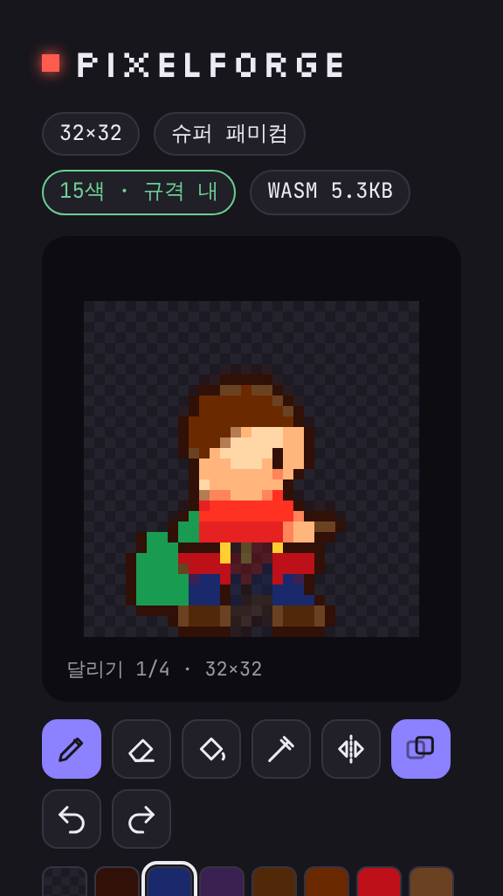
PixelForge
An image-to-sprite forge. Turn a photo or AI image into pixel art for 10 console palettes from NES to Mega Drive, edit it, generate run, jump and attack animations, and export sprite sheets and GIFs.
- AssemblyScript → wasm32
- 5 KB binary
- 8×8 to 256×256
- touch + keys
- 한국어
-
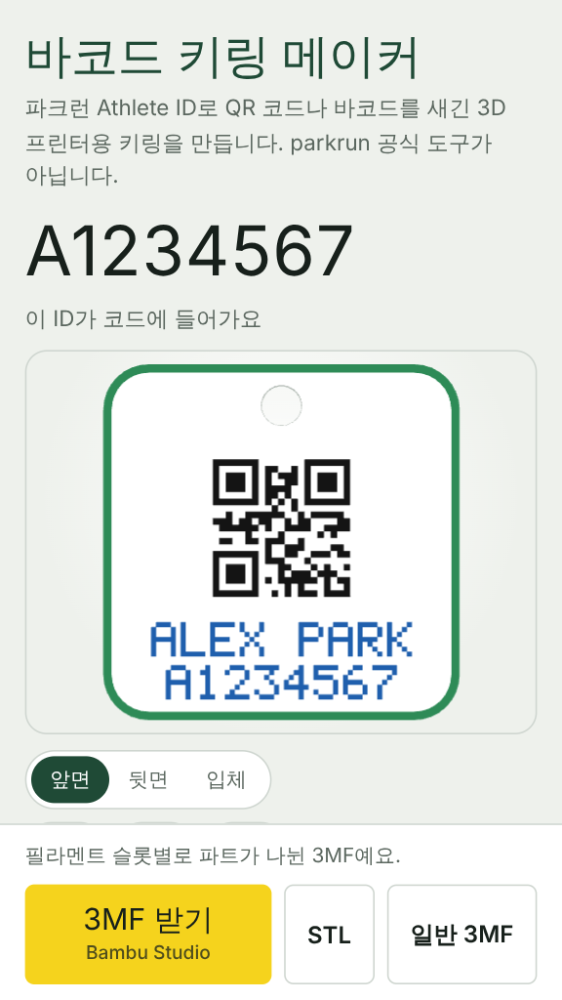
바코드 키링 메이커
Turn a parkrun athlete ID into a 3D-printable keyring tag with a QR code or Code 128 barcode. Choose the shape, hole position, sizes and front and back colours, then export a multi-colour 3MF for Bambu Studio and AMS. Unofficial.
- Rust → wasm32
- 426 KB binary
- 3MF · STL
- 4-colour AMS
- 한국어
-
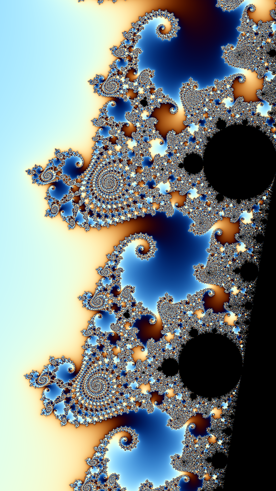
Mandelbrot Dive
A Mandelbrot set explorer. Pan, pinch and double-tap to dive in with smooth colouring, swap or cycle five palettes, and fly to landmarks like Seahorse Valley and a mini-brot, down to the edge of 64-bit precision.
- C → wasm32
- 2 KB binary
- zoom to ×10¹³
- touch + keys
-
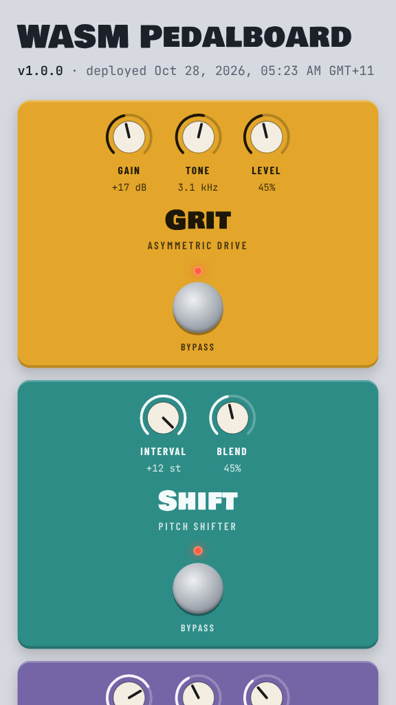
WASM Pedalboard
A real-time effects pedalboard. Run a step-sequenced synth, an audio file or your mic through a drive, a pitch shifter and a stereo reverb, with click-free bypass and a live scope.
- C → wasm32
- 7 KB binary
- AudioWorklet
- mic + file input
-
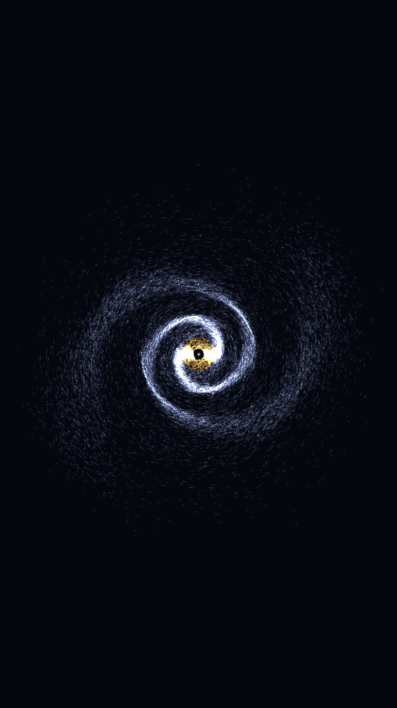
Swarm & Spiral
A particle playground. Poke thousands of flocking boids, a spiral galaxy or two colliding galaxies that throw out tidal tails, with attract, repel and swirl tools.
- C → wasm32
- 13 KB binary
- 40,000 stars
- touch + mouse
-
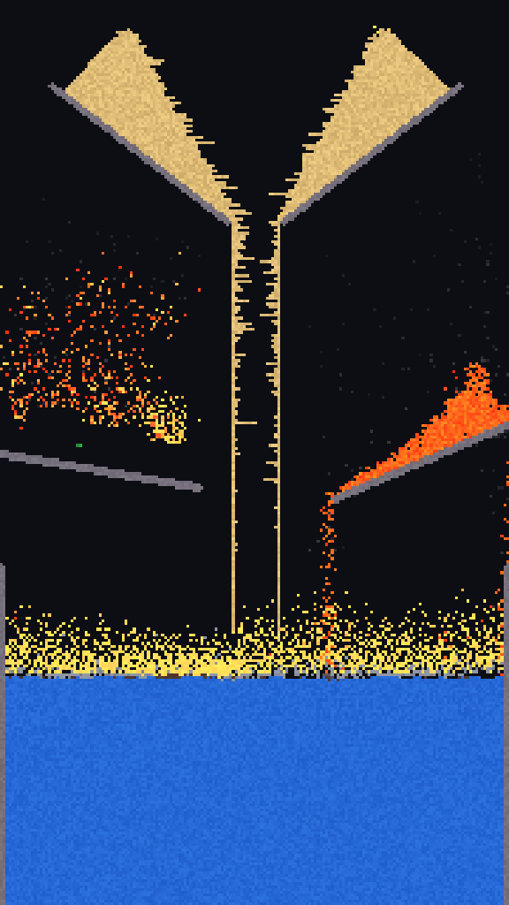
Kiln Sandbox
A falling-sand world where every pixel is a particle. Pour sand, water, oil, acid and gunpowder, then set it alight: lava fuses sand into glass, water quenches it into stone, and powder goes up in chain explosions.
- C → wasm32
- 15 KB binary
- 153,600 cells
- v1.0.0 · 2026-10-28
-
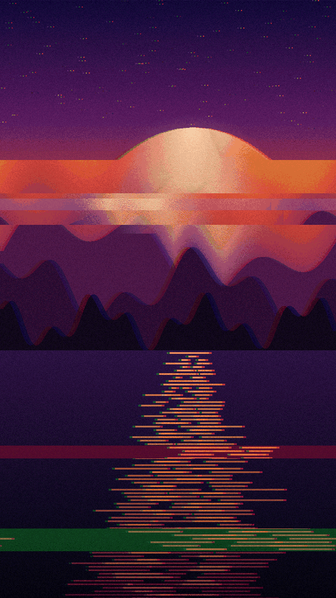
Darkroom Filter Lab
Drop in a photo and stack blur, edge detection, pixel sorting, ASCII art and glitch effects. Every filter runs in WebAssembly inside the tab, so the image is never uploaded.
- C → wasm32
- 8 KB binary
- 5 stackable effects
- v1.0.0 · 2026-10-28
-
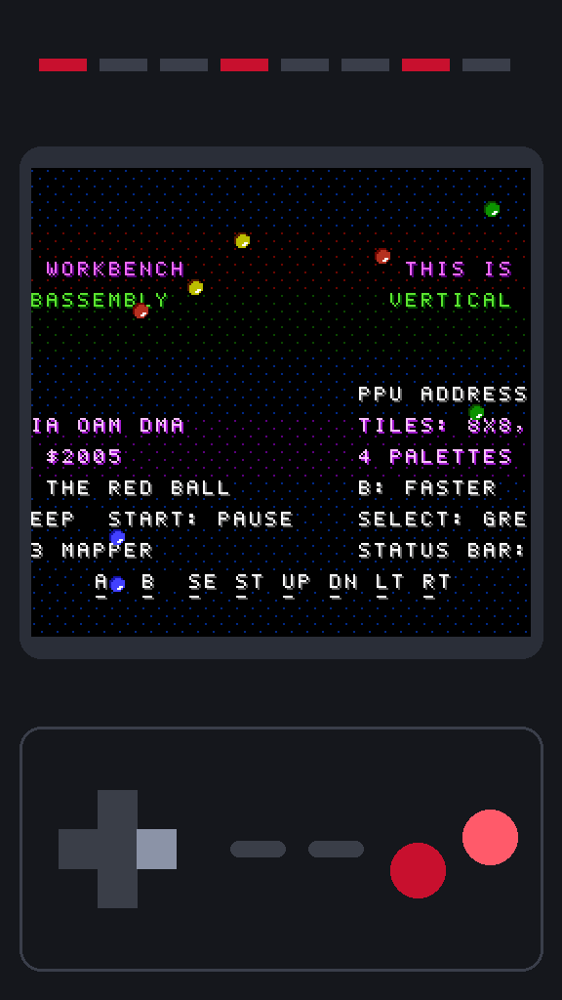
Rust NES Workbench
A cycle-accurate NES emulator. Open your own .nes files and play with sound and battery saves, or try the built-in sample cartridge, while live panels show the CPU, PPU, APU and mapper at work.
- Rust → wasm32
- 170 KB binary
- mappers 0-4, 7
- 101 / 104 test ROMs
- full-screen touch
- v1.2.1 · 2026-10-28
-
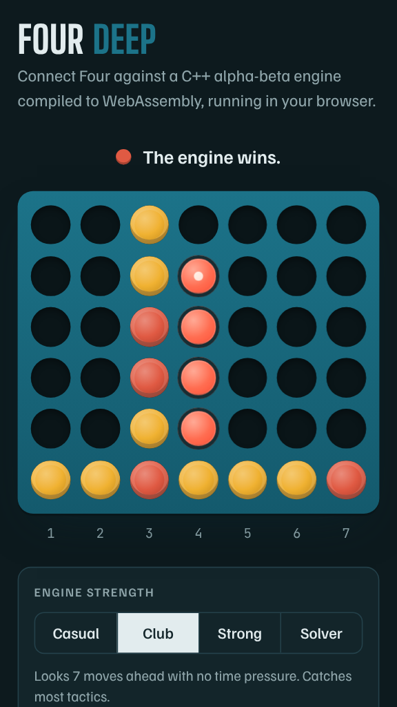
Four Deep
Connect Four against a search engine. Pick from four strengths, ask for a hint or take back a move, and watch the engine report its search depth and whether it has proven a win, draw or loss.
- C++ → wasm32
- 6 KB binary
- ~10M positions/s
- touch + keys
- v1.0.0 · 2026-10-28
-
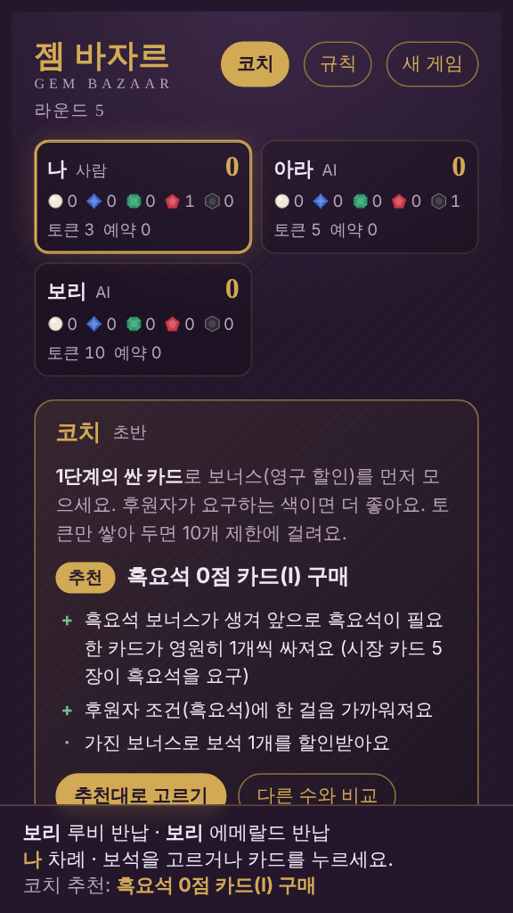
젬 바자르
A gem-merchant engine-building card game with Splendor's rules and original art. Play 2 to 4 players against AI or pass-and-play, with a coach mode that recommends a move each turn, grades your own picks and explains what the other merchants are up to. Korean UI.
- Rust → wasm32
- 140 KB binary
- AI + coach
- touch + mouse
- v1.1.0 · 2026-10-28